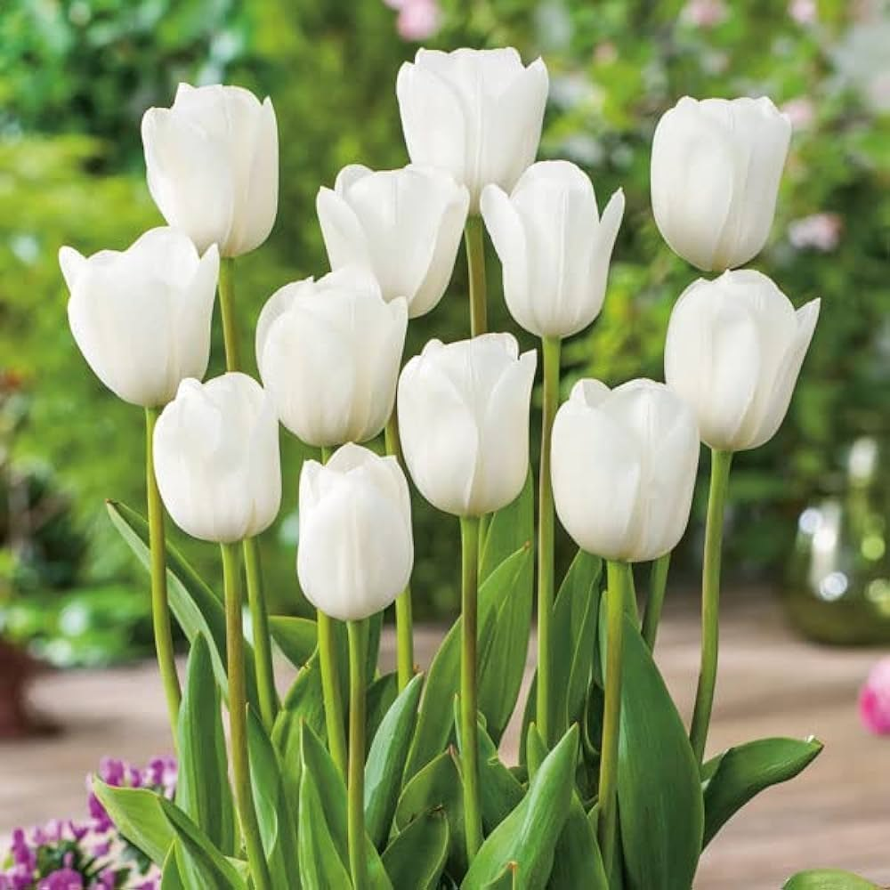

Go to Greeting Page
My ambition is to become an engineer.
My hobby is painting.
(a-b)2 = a2 - 2ab + b2
2H2 + O2 = 2H2O
#include <stdio.h>
int main() {
printf("Account Number: 1258 3542 1424 3622");
printf("Balance: ₹20,800");
return 0;
}

This is the first paragraph.Flowers are one of nature’s most exquisite creations, admired for their vibrant colors, enchanting fragrances, and diverse shapes. They are the reproductive structures of flowering plants and play a vital role in pollination, enabling the continuation of plant life. Flowers not only beautify the world but also hold significant cultural, symbolic, and ecological importance.
This is the second paragraph.Tulips: The Harbingers of Spring Tulips are one of the most popular and cherished flowers in the world, known for their vibrant colors, elegant shape, and rich history. Belonging to the genus Tulipa in the lily family, these perennial flowers bloom in spring and are celebrated for their beauty and simplicity.
Website completion:
Progress on learning HTML:
visitThe website is a simple HTML page showcasing various elements, including a personalized title and formatted display of the user's name, alphabets styled differently, and paragraphs about ambition and hobbies. It includes mathematical equations, a C program snippet, an interactive marquee for the roll number, a "mailto" email link, and a background image. The page also features special tags like a progress bar, summary, and acronym, making it a comprehensive demonstration of basic HTML features without using CSS.